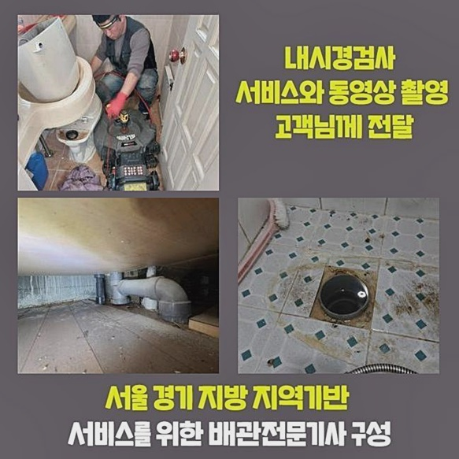
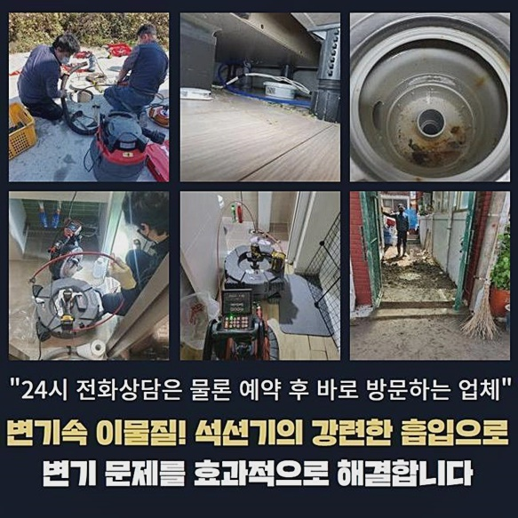
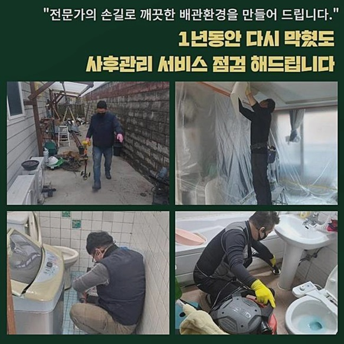
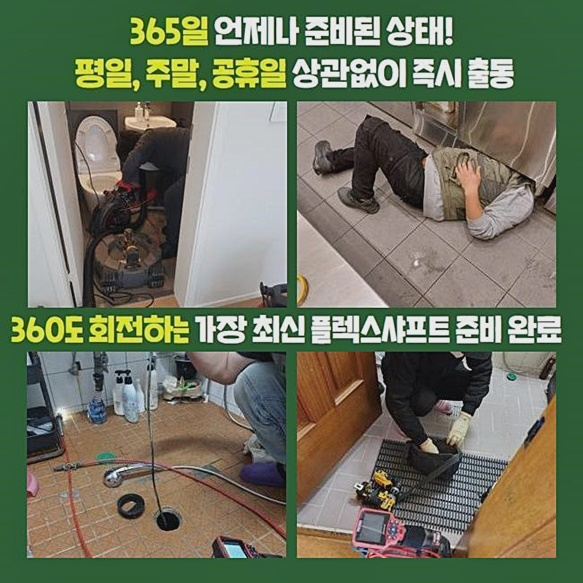
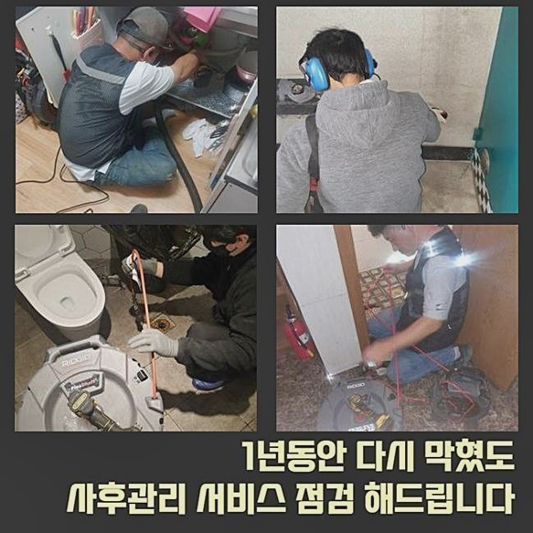
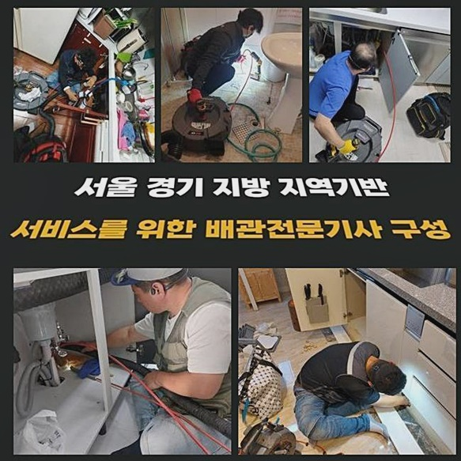
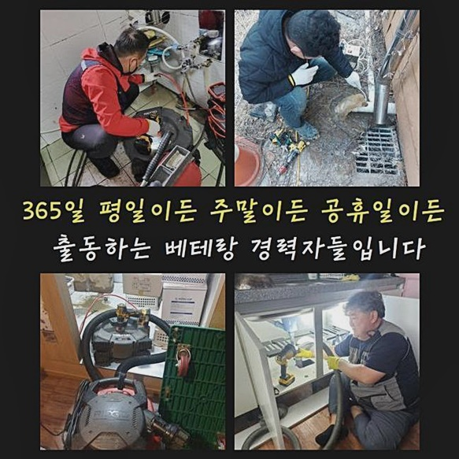

🏠 남동구 만수동세탁기배수구막힘 고잔동 배수구뚫기 설비출장
용인 남동 변기막힘 전문 시공 후기

📋 작업 개요
- 위치: 용인 남동, 남동, 용인
- 서비스 유형: 변기막힘, 하수구막힘, 배관막힘, 역류해결, 뚫는업체, 배관청소, 고압세척
- 작업 일시: 2024. 7. 28. 16:26
- 업체명: 하수구수사대 (010-5615-2118)
🔍 문제 상황
남동구 만수동세탁기배수구막힘 고잔동 배수구뚫기 설비출장
많은 사람들이 이용하는 건물에서 배수장애가 발생되었다고 말씀해주셔서 방문을 드리게되었어요
도착하니 역류들이 생겨나게되었고 복도부분에는 오수들로 흥건하다고 설명하셨어요
이대로 방치할 시 상태는 심각해지기에 서둘러서 해결할 생각으로 내방을 해보았는데요
저희전문진은 신속한 세척과 청소를 실시하여 고객분을 돕는데요
미해결 시 비용들도 청구드리지않기에 여러 고객분들이 반드시 해결해내는 저희업체에게 의뢰를 맡기세요
처음엔 내시경장비로 심층부까지 관찰해야하죠 배수관의 특성상 내시경장비들이 요구됩니다
내시경기기의 헤드쪽엔 렌즈들이 있기에 진단을 할때 안측을 빈틈없이 보여줍니다
내시경장치로 주시하니 내부는 불그스름하게 된걸 목격했는데 붉게보이는것이 기름때문이라 생각하시면 되겠는데요
이러한 모습은 통수공간이 전혀 없는 상태인것이죠
위와같은 상황에서는 각각의 가지배관에서 빠지는 잔해물이 메인으로 모이며 찌꺼기까지 쌓여버려서 지속적으로 쌓여버리게 되면 막히는 문제는 필히 발생해요
배수장애가 생겨나면 다양한 측면에서 피해가 야기될수밖에 없습니다
다수가 이용하는 설비일 경우 관리적 측면을 우선시하고 위생적으로 이용되어야 증세가 발생치 않고 지속적으로 사용하실 수 있어요

🔎 원인 분석
💡 전문가 진단: 정밀 진단 장비를 사용하여 슬러지의 고착 여부를 판명하고 타격/세척 작업을 실시했습니다.
유분성분을 배출시키거나 식료품 혹은 물티슈들과 같이 막혀버리는 문제를 야기하는 이물들을 투입시키지않고서 관리한다면 위같은 불상사들이 생겨나지 않을텐데요
내부의 상태는 최악으로 치닫았고 흡착물들도 대량이였던 상태였는데요
시작지점을 찾으려고 트랩부분을 거쳐 구석구석 파악해주며 심부까지 확인해보았어요
점검을 철저하게 못한다면 추후의 세척도 큰 효과가 없다 보아야하죠 눈여겨봐야할 것은 증세를 없애는것에 있으나 작업 이후에 똑같은 증상이 발생되지 않도록 하는게 중요해요
일시적인 해결을 한 뒤 철수하기보다는 지속적으로 생활하다가 재발되지 못해야 고객분의 신뢰가 상승해요
해당 현장은 세척이 빈틈없이 이어나가지 못했던 상태로 파악되었고 비위생적으로 관리되었단걸 인지했어요
막혀버리는 증세가 빈번하거나 쉽게 고쳐지지않으면 점검등을 빈틈없게 진행하지않은 현장일텐데요
불특정 인원들이 쓰기에 해당 부분들을 간헐적으로라도 유심히 지켜봐야하는데 그런 흔적은 보이지 않았어요
개별적인 하수구들이 막히게되었을 때 대개 그 공간만의 결함일거라 여기겠지만 그와 반대로 관리가 늦어질수록 연결된 가구들에 증세를 입힙니다
이럴땐 경제적 지출도 올라가고 걸리는 시간마저도 길어지게되서 의뢰인분들의 불편은 상당히 커져요
저희업체에게 호소를 하셨는데요
보통 음식을 변기의 안쪽으로 배출시키는 경우들도 많이 보이고 기름까지 개수대에 버리십니다
기름들을 개수대에 버리면 추후에 증상이 생겨나게되고 휴지 등을 이용하여 걷어내고 설거지를 해주시기 바라요

🔧 작업 과정
저희전문진은 위같은 한번 세척과 청소를 해드리고 휙 돌아서지 않고 일년간 AS실시를 지원하기때문에 고객께서 불안한 기색없이 사용할 수 있겠다고 만족의 말씀도 많이 주십니다
저희업체는, 해결을 해내는게 중요하겠으나 과정들이 그만큼 중요한것으로 여기기에 성능 좋은 장비를 이용하고 있답니다
일단 내시경기기를 대표로해서 흡입기와 샤프트기기랍니다 배관 청소 시에 필요해요
샤프트기는 머리쪽이 사슬로 이뤄져있으므로 분쇄하는데에 최적화된 기기에요
고착물들과 벽쪽에 자리잡고있는 슬러지들도 제거시켜요
뒤이어 석션의 경우 빨아당기는 힘으로 하수들을 청소해요
작업 시 흡입시켜서 뚫는것이 목적이라 그 결과도 뛰어납니다 우리들이 주로 이용해주는 청소기용품과 동일한 원리로 작용한다고 보아도 무방합니다
철저하게 세척이 이뤄지려면 작업의 작업계획 수행이 중요해요 문제의 근원부를 원만하게 청소하고 또 발생하지 못하게 해주어야 됩니다
오랫동안 낡은것이 확인되었고 세척하기에도 애로사항이 있었어요
해당 문제들은 뚫어내는데에 혈안을 올리기보다는 고압의 물로 청결을 담당하는것도 철저하게 행해져야지만이 새것과같이 향후 문제도 발생되지 않아요
고압수청소 기기는 노즐부품을 연결시켜 배관내부로 위치시켜 작업을 진행시키죠
물때문에만 청결한 하수관을 형성하기에 위험없이 이용될 수 있는 전문기계입니다
이런저런 이물들을 세척들을 해주는 기능을 해요
세척하는 기능들도 수행하므로 만족도들은 높아집니다
전문진마다 해결과정은 각자 상이하단건 당연할 수 있겠으나 눈여겨 봐야할 건 작업 이후에 동일한 문제들이 되느냐 안 되느냐의 차이로 보시면되는데요
저희의 경우 여러 노하우로 해결책들을 배양시켰고 저희로 말씀드리자면 조속히 내방하여 조속히 해결을 도와드려요
지역따지지 않고 한시간안으로 내방이 가능한 까닭에 문의를 주시는 의뢰자들이 상당수 자주 보입니다
증상이 생겨날 시 고객분들은 곤경에 처하게 되고 신속히 해결해줘야겠다는 생각이실텐데요
저희들이 작업을 하고서 끝이아닌 1년의 시간에 걸쳐 무상수리까지 제공하니 안전하게 계셔도 좋아요
세대원이 유의사항을 준수하면서 생활할 경우 염려하시는 일들은 대폭 줄어들게 됩니다
특정 위치만의 증상이 아닌 경우가 많아 많은 인원이 협조해가며 관리를 수습해야하죠


✅ 작업 완료
일정 구간이 잘못된다라면 오늘과같이 메인관로의 결함이 됩니다
그렇기에 징후가 발생되면 전문업체를 부르시면 되겠는데요
무작정 해결할 목적으로 클리너를 구매하시는 의뢰자분이 계시는데요
약품들이 의미없는건 아니나 쓰고난 뒤 개선되지 못하면 심층부에서부터 잔해물이 누적된 상황이기때문에 이왕이면 전문가들의 해결책을 통해 바로 잡아야되겠죠?
끝으로 내시경장비로 안을 파악하여 이상없이 막혀버린 사안이 해결되면 철수합니다
시정되지 못한 경우엔 일체의 금액들을 받는 일이 없기에 주저없이 의뢰해주세요!




⚠️ 하수구 배관 막힘 예방 및 관리 가이드
- ✅ 머리카락, 비닐, 물티슈 등 물에 분해되지 않는 이물질은 하수구 유입을 절대 금지해 주세요.
- ✅ 하수구 거름망을 씌우고 모여진 이물질은 주기적으로 쓰레기통에 바로 비워주셔야 합니다.
- ✅ 배관 노후가 심할 경우 이물질이 더 쉽게 걸리므로 주기적인 배관 세척(고압세척 등)을 권장합니다.
- ✅ 작업 후 1년 이내 재발 시 하수구수사대에서 무상 A/S 보증 서비스를 제공합니다.
💡 핵심 정리
- 확실한 장비 작업(내시경 점검 및 샤프트 스케일링)으로 원인을 뿌리 뽑습니다.
- 작업 후 1년 이내에 동일한 부위 재발 시 100% 무상 A/S 서비스를 보장합니다.
- 서울 · 경기 · 인천 전 지역에 24시간 언제든 긴급 출동할 수 있도록 항시 대기 중입니다.
❓ 자주 묻는 질문 (FAQ)
🚨 용인 남동 변기막힘 문제로 고민이신가요?
정확한 원인 진단과 확실한 시공으로 재발 없는 해결을 약속드립니다.
24시간 긴급 출동 | 서울 · 경기 · 인천 전지역 | 1년 내 재발 시 무상 A/S